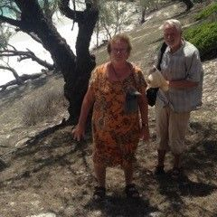
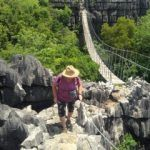

Wir hatten ja schon Madagaskar-Erfahrungen, aber diese Madagaskar-Reise mit PRIORI Reisen war viel interessanter, anregender und trotzdem erholsamer
„Liebes Priori-Team, zuerst möchten wir allen PRIORI-Mitarbeitern ein erfolgreiches, gutes Neues Jahr wünschen. Hoffentlich geht es in Madagaskar mit dem neuen Präsidenten nicht weiter abwärts. Viele mit denen wir gesprochen haben, waren nicht sehr zuversichtlich, dass er das Land vorwärts bringen kann.
Ich möchte nun etwas ausführlicher über unsere Reise berichten. Wir hatten ja schon Madagaskar-Erfahrungen, aber diese Madagaskar-Reise mit PRIORI Reisen war viel interessanter, anregender und trotzdem erholsamer.
Der Flug nach Madagaskar verlief planmässig und auch das Prozedere bei der Einreise war wie üblich.
Unseren Fahrer Adolphe haben wir problemlos gefunden und damit konnte die Reise starten.
Die Reiseroute brachte jeden Tag neue Eindrücke. Wir hatten viel Zeit, Fotos zu machen und die vielen schönen Eindrücke in uns aufzunehmen.
Die Hotels waren bis auf zwei Ausnahmen sehr gut, aber es ist halt nicht an allen Orten möglich, gute Unterkünfte zu finden.
Das Hotel in Maevatanana hatte es wohl hinter sich und das Malibou Hotel in Analalava konnte doch noch mit seiner spektakulären Lage und den schönen, gestickten Rideaux punkten.
Zuerst wussten wir nicht so recht, was wir in Analalava machen sollten. In unserem Reiseführer und in der Madagaskar-Karte waren weder Komazara, noch Tsingy zu finden.
Doch die Ausflüge mit Jean Pierre zur Insel Nosy Lava und nach Komazara waren dann sehr schön und interessant. Jean Pierre hat uns viel erzählt und gezeigt. Er ist als Guide sehr zu empfehlen. Wir haben sehr viel gesehen und schöne Eindrücke gewonnen. Die gewaltigen Baobab dort und die Tsingy sind eine Augenweide.
Die Weiterfahrt zu Lande war dann, besonders für Adolphe, anstrengend. Er hat uns sehr gut über alle Pisten, egal in welchem Zustand, chauffiert.
In Ambanja haben wir in einem Schaugarten interessantes über Kakao, Kaffee und Gewürzpflanzen erfahren. Nur eine grössere Pfefferanpflanzung war leider nicht dabei.
Die Nationalparks von Ankarafantsika und Ankarana sind Beispiele dafür, was doch durch die Brandrodung verloren gegangen ist, ein Jammer. Wir haben in den Parks interessante Wanderungen unternommen, jeweils mit sehr kompetenten Guides. Flora und Fauna sind dort prächtig und sehr vielfältig. Besonders die Tsingy von Ankarana waren sehenswert und die Wanderung dort war für mich sehr anstrengend.
Besonders von den vielfältigen Landschaftsformen sind wir immer wieder beeindruckt worden. Erstaunlicherweise waren jeden Tag immer wieder neue, erstaunlichere Dinge zu betrachten.
Die Wanderungen in den Montagne d’Ambre waren besonders schön. Unser Guide zeigte uns viele Tiere und Planzen, darunter das kleinste Chamäleon und ein Blattschwanz-Gecko. Diese hätten wir ohne ihn nie und nimmer gesehen. Und auch unsere letzte Station im Norden von Diego und Ramena waren eine Reise wert.
Der Rückflug nach Antananarivo war dann zwar erheblich verspätet, hat aber dann gut geklappt. Nur unser Fahrer Percy in Antananarivo musste aber lange auf uns warten. Auch seine Fahrkünste und seine guten Erklärungen möchten wir ausdrücklich loben.
Nun hoffen wir, dass wir in neuen Jahr wieder eine Madagaskar-Reise mit PRIORI Reisen machen können. Was wir noch sehen möchten wissen wir genau.
Viele liebe Grüsse und vielen Dank für die gute Organisation.“
Magdalene und Bernd W.
-

-
